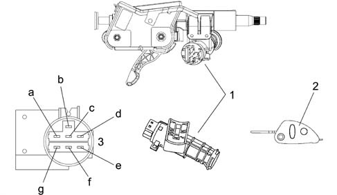
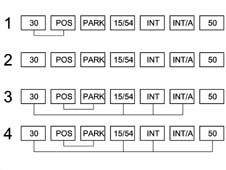
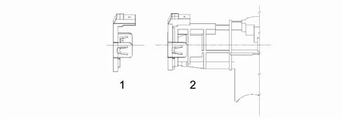
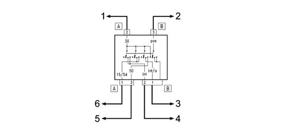

5520A IGNITION SWITCH
- Path
- Descriptions > 55 ELECTRICAL EQUIPMENT > 5520 ENGINE STARTING > 5520A IGNITION SWITCH
- Kind
- system description
- Applies to
- all engines; all production periods
- Interactive page
- https://sloeber94.github.io/elrnDB-aGt/en/#/125000401
Applies to: all engines; all production periods
COMPOSITION
The diagram below illustrates the ignition switch.

1 - Ignition switch
2 - Ignition key
3 - Electrical connector
a - INT
b - INT/A
c - POS
d - PARK
e - 50
f - 30
g - 15/54
OPERATION
The diagram illustrates the connections.

1 - PARK: key can be removed from STOP to PARK by pressing the inhibitor button
2- STOP: key can be removed
3 - DRIVE: key cannot be removed
4 - STARTING: key cannot be removed automatic return to 'DRIVE' position
The ignition key with a steering lock is a component which carries out the main function, through the insertion of a coded mechanical key, of supplying several circuits including the ignition/injection system, the engine starting and the services controlled by the ignition.
The steering lock function is included amongst its tasks.
The ignition key is equipped with an 'anti-repeater' device which prevents the starting manoueuvre if the key is not returned to the STOP position.
The steering lock has two safety devices so that if one of them is broken and the ignition key is in the ON position the steering column cannot be mechanically locked.
If the parking lights button is pressed it is possible to move from STOP to PARK and it is automatically released by turning the key to the STOP position.

1 - Aerial for ALFA CODE
2 - Aerial fitted on the switch
The ignition switch is also used as a support for the aerial needed in transferring the codes in the ignition key transponder and is used by the ALFA CODE system for releasing the injection control unit (NCM) and allowing the engine to be started up.
The diagram below illustrates the switch electrical connections.

1 - To the IGN maxifuse (30A)
2 - To pin 2 connector H dashboard junction unit (CPL)
3 - To pin 1 connector H dashboard junction unit (CPL)
4 - To pin 11 connector H dashboard junction unit (CPL)
5 - To the starter motor (or Selespeed starting relay)
6 - To pin 30 connector A engine compartment junction unit (CVM)